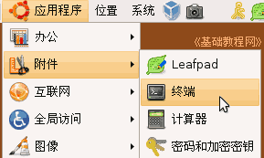
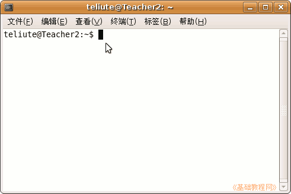
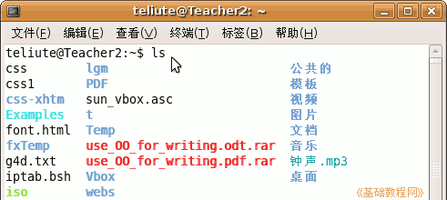
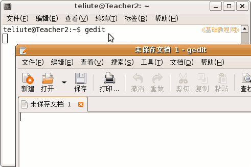

电脑操作基础
作者：TeliuTe 来源：基础教程网
十三、终端和命令行 返回目录 下一课在Ubuntu中既可以使用鼠标操作，也可以使用命令行来操作，命令行一般是在终端中使用，下面我们来看一个练习；
1、启动终端
1）点菜单“应用程序－附件－终端”命令，打开一个终端窗口；
2）出来一个终端窗口，标题栏上是自己的用户名和计算机名，窗口中一个光标一闪一闪，表示可以输入命令了；
；
上面的 ~ 表示自己的主文件夹，$ 表示普通命令提示符，如果是 # 则表示是管理员提示符；
2、常用命令
1）ls 命令，在提示符$后面输入ls，然后按回车键，可以显示当前目录下的文件和文件夹；

2）启动文本编辑器，或其他文本工具，输入命令 gedit 然后按一下回车键；
；
这时候会出来一个文本编辑器的窗口，终端窗口中光标一闪一闪，处于暂停状态，当关闭了文本编辑器，终端窗口才能继续使用；
本节学习了在Ubuntu中使用终端命令行的基本操作，如果你成功地完成了练习，请继续学习下一课内容；本教程由86团学校TeliuTe制作|著作权所有，商业用途请与作者联系
基础教程网：http://www.laxjyj.com/teliute/
美丽的校园……
转载和引用本站内容，请保留版权信息和本站链接。